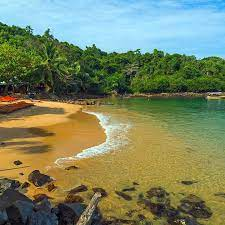
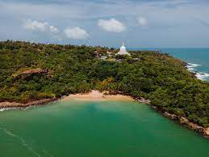
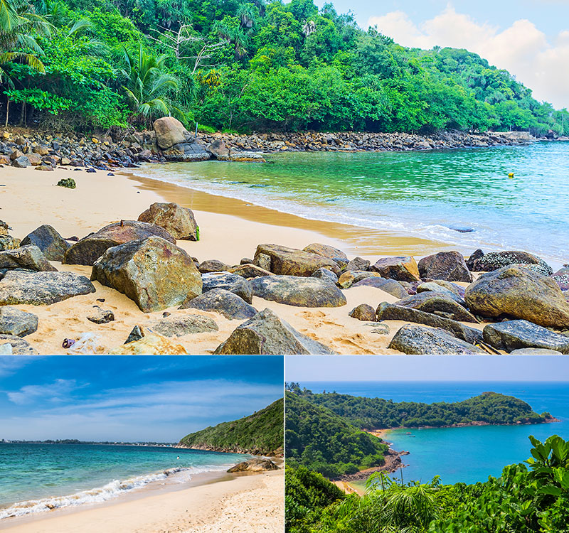
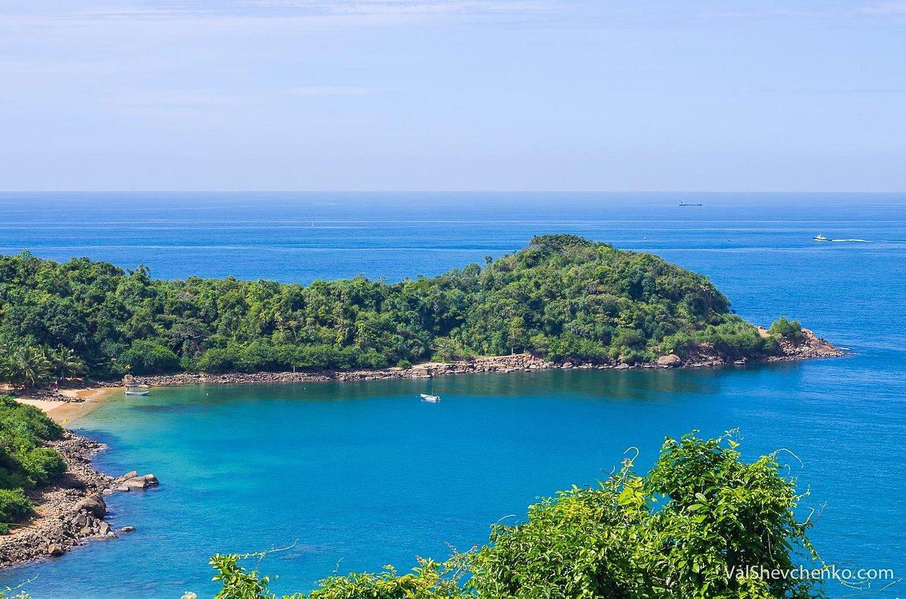

Jungle Beach
The Jungle Beach is an out-of-the-way and serene beach that is a storehouse of all the quiet time you need on your holiday. Located a little ahead of the Japanese Peace Pagoda, this Beach is one of the most relaxed one and is much less swarming than all the other tourist places in Galle.
You can sit back on the sandy beach and get a perfect tan, or swim in the clear waters that seem like a mirror image of the ground below. If you are a fan of the aquatic life, then you could spend some time Snorkeling to see for yourself the life of the rich marine life in Galle.
Location: Rumassala, Close to Galle and Unawatuna Beach
Timings: Open twenty-four hours;
the best time to visit is from 09.00 a.m. to 05.00 p.m.
Entry Fee: Free
You can sit back on the sandy beach and get a perfect tan, or swim in the clear waters that seem like a mirror image of the ground below. If you are a fan of the aquatic life, then you could spend some time Snorkeling to see for yourself the life of the rich marine life in Galle.
Location: Rumassala, Close to Galle and Unawatuna Beach
Timings: Open twenty-four hours;
the best time to visit is from 09.00 a.m. to 05.00 p.m.
Entry Fee: Free